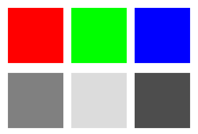
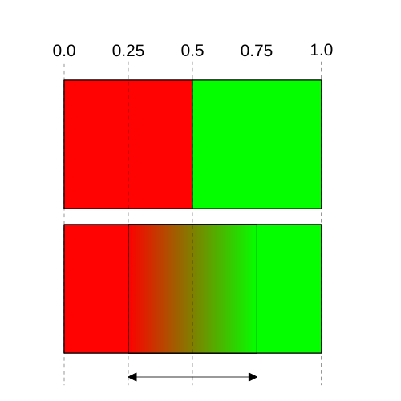

本文是关于图像调整的短系列文章的第二篇。每个章节都建立在前一篇的基础上，因此你可能会发现按顺序阅读更容易理解。
继续上一篇文章的内容，让我们实现一个"双色调"图像调整效果。这是一种利用图像亮度在两种颜色之间进行选择的调整方式。
在上方的图像中，图像中的暗部选择第一种颜色，亮部选择第二种颜色。越暗越接近第一种颜色，越亮越接近第二种颜色。
我们本可以直接选择最大颜色通道作为亮度值来获得一种效果，但人眼对绿色更敏感，所以至少在电脑显示器或手机屏幕上，绿色比红色亮，红色又比蓝色亮。
将 RGB 转换为亮度的公式（即"亮度值"）是：
亮度值 = 红色 * 0.2126 + 绿色 * 0.7152 + 蓝色 * 0.07222
从这个公式可以看出，绿色比红色亮约 2.5 倍，比蓝色亮约 10 倍。

将其转换为 WGSL，可以这样写：
fn luminance(color: vec3f) -> f32 {
return dot(color, vec3f(0.2126, 0.7152, 0.0722));
}
这里的 dot 会将两个向量中对应的元素相乘，然后求和。
利用这个函数，我们可以将双色调调整添加到着色器中（延续上一篇文章的内容），如下所示：
fn luminance(color: vec3f) -> f32 {
return dot(color, vec3f(0.2126, 0.7152, 0.0722));
}
+fn applyDuotone(color: vec3f, color1: vec3f, color2: vec3f) -> vec3f {
+ let l = luminance(color);
+ return mix(color1, color2, l);
+}
...
struct Uniforms {
brightness: f32,
contrast: f32,
@align(16) hsl: HSL,
+ @align(16) duotone: f32,
+ @align(16) duotoneColor1: vec3f,
+ @align(16) duotoneColor2: vec3f,
};
@group(0) @binding(0) var postTexture2d: texture_2d<f32>;
@group(0) @binding(1) var postSampler: sampler;
@group(0) @binding(2) var<uniform> uni: Uniforms;
@fragment fn fs2d(fsInput: VSOutput) -> @location(0) vec4f {
let color = textureSample(postTexture2d, postSampler, fsInput.texcoord);
var rgb = color.rgb;
rgb = adjustHSL(rgb, uni.hsl);
rgb = adjustBrightness(rgb, uni.brightness);
rgb = adjustContrast(rgb, uni.contrast);
+ rgb = mix(rgb, applyDuotone(rgb, uni.duotoneColor1, uni.duotoneColor2), uni.duotone);
return vec4f(rgb, color.a);
}
我们添加了一个名为 duotone 的混合比例参数，这样就可以控制双色调效果的使用程度。
让我们移除 HSL 设置，因为它们会使示例变得复杂：
struct Uniforms {
brightness: f32,
contrast: f32,
- @align(16) hsl: HSL,
@align(16) duotone: f32,
@align(16) duotoneColor1: vec3f,
@align(16) duotoneColor2: vec3f,
};
@group(0) @binding(0) var postTexture2d: texture_2d<f32>;
@group(0) @binding(1) var postSampler: sampler;
@group(0) @binding(2) var<uniform> uni: Uniforms;
@fragment fn fs2d(fsInput: VSOutput) -> @location(0) vec4f {
let color = textureSample(postTexture2d, postSampler, fsInput.texcoord);
var rgb = color.rgb;
- rgb = adjustHSL(rgb, uni.hsl);
rgb = adjustBrightness(rgb, uni.brightness);
rgb = adjustContrast(rgb, uni.contrast);
rgb = mix(rgb, applyDuotone(rgb, uni.duotoneColor1, uni.duotoneColor2), uni.duotone);
return vec4f(rgb, color.a);
}
然后我们需要更新 JavaScript 代码来设置双色调参数：
function postProcess(encoder, srcTexture, dstTexture) {
device.queue.writeBuffer(
postProcessUniformBuffer,
0,
new Float32Array([
settings.brightness,
settings.contrast,
0,
0,
- settings.hue,
- settings.saturation,
- settings.lightness,
- 0,
+ settings.duotone,
+ 0,
+ 0,
+ 0,
+ ...settings.duotoneColor1, 0,
+ ...settings.duotoneColor2, 0,
]),
);
postProcessRenderPassDescriptor.colorAttachments[0].view = dstTexture.createView();
const pass = encoder.beginRenderPass(postProcessRenderPassDescriptor);
pass.setPipeline(postProcessPipeline);
pass.setBindGroup(0, postProcessBindGroup);
pass.draw(3);
pass.end();
}
const settings = {
brightness: 0,
contrast: 0,
- hue: 0,
- saturation: 0,
- lightness: 0,
+ duotone: 1,
+ duotoneColor1: new Float32Array([0.1, 0, 0.5]),
+ duotoneColor2: new Float32Array([1, 0.69, 0.4]),
};
const gui = new GUI();
gui.onChange(render);
gui.add(settings, 'brightness', -1, 1);
gui.add(settings, 'contrast', -1, 10);
- gui.add(settings, 'hue', -0.5, 0.5);
- gui.add(settings, 'saturation', -1, 1);
- gui.add(settings, 'lightness', -1, 1);
+ gui.add(settings, 'duotone', 0, 1);
+ gui.addColor(settings, 'duotoneColor1');
+ gui.addColor(settings, 'duotoneColor2');
这样我们就得到了双色调效果。
请注意，许多常见的效果都可以通过这种方式实现。例如，“深褐色”基本上只是选择深褐色色调的问题。
在上面的代码中，我们使用 mix 在两种颜色之间进行混合。
let l = luminance(color); return mix(color1, color2, l);
另一种混合颜色的方法是使用一张 2×1 像素的纹理并启用线性过滤，就像我们在纹理相关文章中介绍的那样。
让我们来实现这个方法。以下是一段使用纹理在颜色间进行混合的 WGSL 代码：
fn apply1DLUT(
color: vec3f,
lut: texture_2d<f32>,
smp: sampler) -> vec3f {
let l = luminance(color);
let width = f32(textureDimensions(lut, 0).x);
let range = (width - 1) / width;
let u = 0.5 / width + l * range;
return textureSample(lut, smp, vec2f(u, 0.5)).rgb;
}
为什么要这么多额外的计算？为什么不直接这样写：
// 警告：这个写法不会生效！
fn apply1DLUT(
color: vec3f,
lut: texture_2d<f32>,
smp: sampler) -> vec3f {
let l = luminance(color);
return textureSample(lut, smp, vec2f(l, 0.5)).rgb;
}
回想一下线性纹理采样是如何工作的。

如果我们看一张 2×1 像素的纹理，从 0.0 到最左边像素的中心采样只会返回第一个像素的颜色。同样，从最右边像素的中心到 1.0 我们只会得到第二个像素的颜色。我们只想要两个像素之间的部分，所以需要将亮度值映射到两个像素之间的坐标空间，然后加上半个像素的偏移。
有了这个函数，我们就可以使用新的函数了：
struct Uniforms {
brightness: f32,
contrast: f32,
- @align(16) duotone: f32,
- @align(16) duotoneColor1: vec3f,
- @align(16) duotoneColor2: vec3f,
+ gradient: f32,
};
@group(0) @binding(0) var postTexture2d: texture_2d<f32>;
@group(0) @binding(1) var postSampler: sampler;
@group(0) @binding(2) var<uniform> uni: Uniforms;
+@group(1) @binding(0) var lut: texture_2d<f32>;
+@group(1) @binding(1) var lutSampler: sampler;
@fragment fn fs2d(fsInput: VSOutput) -> @location(0) vec4f {
let color = textureSample(postTexture2d, postSampler, fsInput.texcoord);
var rgb = color.rgb;
rgb = adjustBrightness(rgb, uni.brightness);
rgb = adjustContrast(rgb, uni.contrast);
- rgb = mix(rgb, applyDuotone(rgb, uni.duotoneColor1, uni.duotoneColor2), uni.duotone);
+ rgb = mix(rgb, apply1DLUT(rgb, lut, lutSampler), uni.gradient);
return vec4f(rgb, color.a);
}
在着色器中，我们将渐变纹理和采样器放在它们自己的组中。
然后我们需要创建一个纹理、一个采样器和一个绑定组：
const lutSampler = device.createSampler({
magFilter: 'linear',
minFilter: 'linear',
});
const rgbToUnorm8 = (rgb) => [0, 0, 0, 1].map((v, i) => (rgb[i] ?? v) * 255 | 0);
const gradientColors = new Uint8Array([
...rgbToUnorm8([0.1, 0, 0.5]),
...rgbToUnorm8([1, 0.69, 0.4]),
]);
const lutTexture = device.createTexture({
size: [2],
format: 'rgba8unorm',
usage: GPUTextureUsage.COPY_DST | GPUTextureUsage.TEXTURE_BINDING,
});
device.queue.writeTexture(
{ texture: lutTexture },
gradientColors,
{ },
[2],
);
const lutBindGroup = device.createBindGroup({
layout: postProcessPipeline.getBindGroupLayout(1),
entries: [
{ binding: 0, resource: lutTexture },
{ binding: 1, resource: lutSampler },
],
});
这里我们使用之前的双色调颜色创建了两个 rgba8unorm 值，并将它们上传到一个 2×1 的纹理中。
function postProcess(encoder, srcTexture, dstTexture) {
device.queue.writeBuffer(
postProcessUniformBuffer,
0,
new Float32Array([
settings.brightness,
settings.contrast,
- 0,
- 0,
- settings.duotone,
- 0,
- 0,
- 0,
- ...settings.duotoneColor1, 0,
- ...settings.duotoneColor2, 0,
+ settings.lutAmount,
]),
);
postProcessRenderPassDescriptor.colorAttachments[0].view = dstTexture.createView();
const pass = encoder.beginRenderPass(postProcessRenderPassDescriptor);
pass.setPipeline(postProcessPipeline);
pass.setBindGroup(0, postProcessBindGroup);
+ pass.setBindGroup(0, lutBindGroup);
pass.draw(3);
pass.end();
}
const settings = {
brightness: 0,
contrast: 0,
- duotone: 1,
- duotoneColor1: new Float32Array([0.1, 0, 0.5]),
- duotoneColor2: new Float32Array([1, 0.69, 0.4]),
+ lutAmount: 1,
};
const gui = new GUI();
gui.onChange(render);
gui.add(settings, 'brightness', -1, 1);
gui.add(settings, 'contrast', -1, 10);
- gui.add(settings, 'duotone', 0, 1);
- gui.addColor(settings, 'duotoneColor1');
- gui.addColor(settings, 'duotoneColor2');
+ gui.add(settings, 'lutAmount', 0, 1);
这样我们就切换到使用纹理了。
经过这么多努力，效果看起来和之前的示例完全一样，那这么做的意义是什么呢？而且如果要更改颜色，我们还需要用新颜色更新纹理。
关键在于，你现在可以使用任意数量的颜色了。只需要创建更大的纹理。无需更新着色器。
以下是 12 个示例，每个图像下方是通过上述代码传入的 256×1 纹理。这通常被称为渐变映射，因为它将图像的亮度值通过一个"渐变"进行映射。不过纹理不一定是渐变。你可以看到其中几个示例的纹理是纯色，而不是渐变。
让我们编写一些代码来生成这些渐变纹理。给定一组颜色和在 0 到 1 之间的停点，我们可以编写代码在它们之间进行插值并创建纹理。但浏览器已经在它的 2D 库中有了渐变生成代码，所以我们直接使用它。
以下是一些渐变数据，每条目的前三个数字是 r、g、b 的 unorm8 格式（0-255），最后一个数字是 0.0 到 1.0 之间的值，表示该颜色在渐变中的位置：
const gradients = [
[
[ 0, 0, 0, 0.0],
[236, 23, 223, 0.37],
[255, 144, 0, 0.48],
[255, 255, 255, 1],
],
[
[ 0, 0, 0, 0.0],
[236, 23, 23, 0.33],
[230, 194, 108, 0.50],
[249, 197, 241, 0.64],
[255, 255, 255, 1],
],
[
[ 10, 10, 10, 0.0],
[ 90, 0, 255, 0.40],
[255, 0, 0, 0.70],
[132, 255, 0, 1],
],
[
[ 20, 20, 20, 0.0],
[ 0, 61, 201, 0.24],
[ 76, 229, 155, 0.47],
[246, 239, 45, 0.66],
[255, 255, 255, 0.80],
],
[
[ 4, 4, 4, 0.0],
[ 0, 184, 255, 0.50],
[255, 133, 0, 0.60],
[255, 255, 255, 1],
],
[
[ 17, 37, 81, 0.0],
[198, 229, 112, 0.43],
[255, 215, 104, 0.51],
[252, 235, 241, 0.59],
[ 97, 159, 234, 0.85],
[ 0, 65, 128, 1],
],
[
[ 0, 0, 0, 0.0],
[ 10, 0, 178, 0.14],
[255, 0, 0, 0.50],
[ 50, 178, 0, 0.61],
[255, 252, 0, 0.80],
[255, 255, 255, 0.98],
],
[
[ 0, 0, 0, 0.0],
[204, 27, 236, 0.25],
[ 54, 129, 221, 0.41],
[ 71, 193, 223, 0.60],
[231, 203, 47, 0.79],
[255, 255, 255, 1],
],
[
[ 27, 27, 27, 0.4],
[114, 0, 255, 0.15],
[ 0, 228, 255, 0.61],
[236, 196, 196, 0.68],
[255, 211, 211, 1],
],
[
[ 26, 47, 71, 0.44],
[207, 27, 38, 0.44],
[207, 27, 38, 0.64],
[103, 138, 146, 0.64],
[103, 138, 146, 0.75],
[231, 210, 155, 0.75],
],
[
[ 0, 0, 0, 0.0],
[ 51, 186, 236, 0.42],
[248, 179, 13, 0.74],
[255, 255, 255, 1],
],
[
[ 0, 0, 0, 0.27],
[ 54, 167, 227, 0.27],
[ 54, 167, 227, 0.38],
[154, 148, 194, 0.38],
[154, 148, 194, 0.49],
[166, 204, 59, 0.49],
[166, 204, 59, 0.60],
[227, 141, 32, 0.60],
[227, 141, 32, 0.73],
[246, 231, 8, 0.73],
[246, 231, 8, 0.82],
[255, 255, 255, 0.82],
],
[
[ 0, 0, 0, 0],
[255, 255, 255, 1],
],
[
[ 0, 0, 0, 0.25],
[255, 255, 255, 0.75],
],
[
[112, 66, 20, 0],
[250, 235, 215, 1],
],
];
我们可以使用 2D 的线性渐变从这些数据生成渐变纹理。
const lutSampler = device.createSampler({
magFilter: 'linear',
minFilter: 'linear',
});
- const rgbToUnorm8 = (rgb) => [0, 0, 0, 1].map((v, i) => (rgb[i] ?? v) * 255 | 0);
- const gradientColors = new Uint8Array([
- ...rgbToUnorm8([0.1, 0, 0.5]),
- ...rgbToUnorm8([1, 0.69, 0.4]),
- ]);
- const lutTexture = device.createTexture({
- size: [2],
- format: 'rgba8unorm',
- usage: GPUTextureUsage.COPY_DST | GPUTextureUsage.TEXTURE_BINDING,
- });
- device.queue.writeTexture(
- { texture: lutTexture },
- gradientColors,
- { },
- [2],
- );
+ const ctx = new OffscreenCanvas(256, 1).getContext('2d');
+ const lutBindGroups = gradients.map(stops => {
+ const grad = ctx.createLinearGradient(0, 0, ctx.canvas.width, 0);
+ for (const [r, g, b, stop] of stops) {
+ grad.addColorStop(stop, `rgb(${r}, ${g}, ${b})`);
+ }
+ ctx.fillStyle = grad;
+ ctx.fillRect(0, 0, ctx.canvas.width, 1);
+ const texture = createTextureFromSource(device, ctx.canvas);
+
+ return device.createBindGroup({
+ layout: postProcessPipeline.getBindGroupLayout(1),
+ entries: [
+ { binding: 0, resource: texture },
+ { binding: 1, resource: lutSampler },
+ ],
+ });
+ });
我们为每个渐变创建了一个绑定组。现在需要使用它们：
function postProcess(encoder, srcTexture, dstTexture) {
...
postProcessRenderPassDescriptor.colorAttachments[0].view = dstTexture.createView();
const pass = encoder.beginRenderPass(postProcessRenderPassDescriptor);
pass.setPipeline(postProcessPipeline);
pass.setBindGroup(0, postProcessBindGroup);
- pass.setBindGroup(1, lutBindGroup);
+ pass.setBindGroup(1, lutBindGroups[settings.lut]);
pass.draw(3);
pass.end();
}
const settings = {
brightness: 0,
contrast: 0,
lutAmount: 1,
+ lut: 0,
};
const gui = new GUI();
gui.onChange(render);
gui.add(settings, 'brightness', -1, 1);
gui.add(settings, 'contrast', -1, 10);
gui.add(settings, 'lutAmount', 0, 1);
我们还需要一种选择渐变的方式。让我们使用 CSS 来展示这些渐变，这样我们就可以点击它们进行选择。
首先是一个容器元素：
<body>
<canvas></canvas>
+ <div id="ui"></div>
</body>
然后是一些 CSS：
#ui {
position: absolute;
left: 0px;
top: 0px;
overflow: auto;
height: 100%;
}
.gradient {
margin: 1px;
width: 100px;
height: 20px;
}
接下来让我们使用 CSS 的线性渐变来创建带有渐变效果的元素：
const uiElem = document.querySelector('#ui');
gradients.forEach((stops, i) => {
const div = document.createElement('div');
div.className = 'gradient';
div.style.background = `linear-gradient(to right,
${stops.map(([r, g, b, stop]) => `rgb(${r}, ${g}, ${b}) ${stop * 100}%`).join(',')}
)`;
div.addEventListener('click', () => {
settings.lut = i;
render();
});
uiElem.append(div);
});
最终效果如下：
在下一篇文章中，我们将把这些线性纹理扩展为三维纹理。